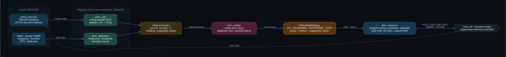

Learned controllers fail silently: the network keeps emitting confident actions while its hidden state has already left the distribution it was trained on. Policy Health Monitor watches a policy's own internals, fuses them with node and sensor health, and emits a single arbitrated signal, OK / DEGRADED / INTERVENE / STOP, each with a reason and a safe recommended action, so a learned policy can be supervised in the loop instead of trusted blind.
The detector, hysteresis, and metrics work from three prior projects is consolidated into one runtime-assurance stack. Each pillar is a public repository that feeds a piece of PHM.
Training and shipping real learned locomotion policies, and the parity discipline that makes a deployed network behave like the one that was trained.
Out-of-distribution detection on policy internals, incident telemetry for ROS 2 robots, and the hysteresis and threshold-calibration methods that keep detectors from flickering.
Self-healing ROS 2 supervision on a legged robot, and the safety-envelope discipline (cooldown, allowlist, resume) carried forward to govern every recovery action.
Policy internals and health signals run through independent detectors, each emitting a normalized verdict. A worst-wins arbiter fuses them into one health state, and a safety-enveloped recovery layer turns that state into a safe command.
Generated diagram (Graphviz), source at docs/architecture.dot. Scroll to pan.

The OOD detector is scored against held-out collapse and in-distribution traces. Threshold-free metrics (AUROC, AUPR) plus an operating-point false-positive rate and end-to-end latency. Numbers are produced by the benchmark harness, not asserted here.
| Metric | Detector | Value | Target |
|---|---|---|---|
| AUROC ↑ | phm_ood (rolling-spread) | 1.000 [1.000, 1.000] | ≥ 0.90 |
| AUPR ↑ | phm_ood (rolling-spread) | 1.000 [1.000, 1.000] | ≥ 0.85 |
| FPR@95 ↓ | phm_ood (rolling-spread) | 0.000 [0.000, 0.000] | ≤ 0.10 |
| runtime latency ↓ | C++ node, workstation CPU | 0.093 ms / frame | ≤ 5 ms |
Numbers above are the collapse-mode result on synthetic embedding streams, where the second-order (variance-collapse) anomaly is invisible to distance and reconstruction baselines (Mahalanobis 0.075, KNN 0.030, RND 0.026 AUROC) but caught at 1.000 by the spread monitor. Full table, the shift-mode comparison, and bootstrap CIs live in benchmark/RESULTS.md. Hardware and real-policy numbers are still pending a compute target.
What is certified in simulation today, and what is explicitly still pending hardware. No claim here outruns the evidence behind it.
phm_core arbitration, hysteresis, severity, and the OOD detector are pure-Python and unit-tested without a ROS graph. Worst-wins fusion and staleness handling are locked by tests.
phm_ood, phm_detectors, phm_arbiter, and phm_recovery are thin rclpy wrappers over the tested core, exercised in a simulated graph (phm_sim).
End-to-end latency and recovery actuation are not yet validated on a physical compute target. Hardware bring-up is gated on lab access and is tracked as an open item, not claimed as done.